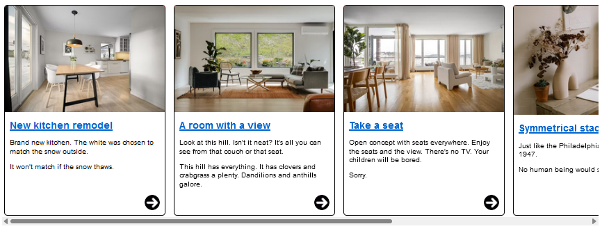
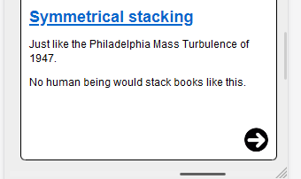
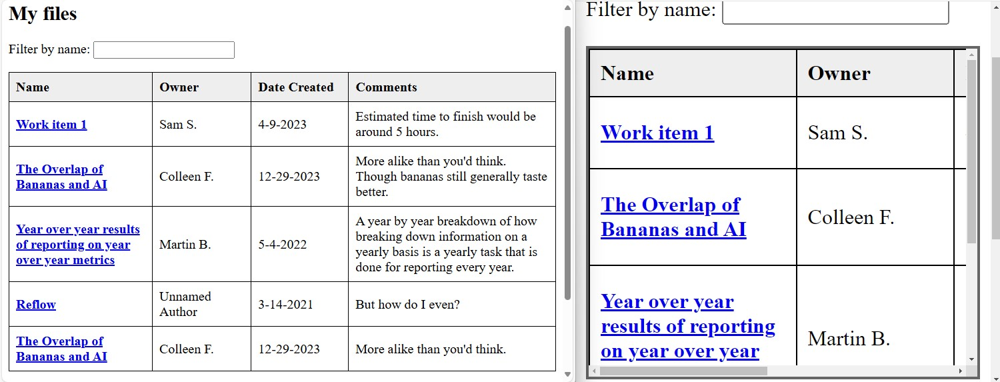

Content can be enlarged without needing to scroll in two directions.
What to do
Make long lines of text reflow within resized or zoomed in interfaces.
Why it's important
People who need bigger text find it difficult if they need to scroll back-and-forth to read multi-lined text.
Intent of this Success Criterion
The intent of this success criterion is to let users enlarge (zoom in) text and other content without having to perform bi-directional scrolling to read. Lines of text that extend beyond the viewport in two-directions force users to scroll back-and-forth to read, which can cause them to lose their place, and significantly increase both physical and cognitive effort. Sections of content are expected to reflow within the appropriate sizing requirement defined by this success criterion, in regards to the text's intended direction of reading. With exceptions for sections of content which functionally requires bi-directional layout for usage or meaning.
Reflow applies to both horizontally and vertically written languages. For pages where the primary written language expects vertical scrolling (such as English), users do not expect to scroll back-and-forth horizontally to read that content. Similarly, users reading content in a written language/direction that expects horizontal scrolling (such as traditional Chinese and Japanese) do not expect to scroll up-and-down vertically to read that content.
Reflow does not prohibit web pages from presenting both horizontal and vertical scrollbars for individual sections of content. Nor does it disallow the use of bi-directional scrollbars at the page (viewport) level if the scrollbars are necessary to scroll excepted content, and non-excepted sections of content otherwise meet Reflow.
However, whenever possible it is in the best interest of the user, to reduce physical and cognitive effort, to limit bi-directional scrolling only to the individual sections of content which necessitate such scrolling, rather than allow the page at large to scroll in two directions. For instance, one might maintain a single scrollbar at page level and confine content which needs bi-directional scrolling (such as a table) into a scrollable container.
An important factor in being able to support Reflow is for the user agent to allow users to adjust the size of content within specific windows of content. For instance, the browser's viewport.
Technologies such as HTML/CSS, PDF and ePub have methods of reflowing content to adjust to the size of the viewport. When appropriately authored, users can use zooming features, provided by the user agent (browser), to enlarge the content within the viewport. Unless otherwise prevented by author styling, the content of the web page will reflow (wrap) to adjust to the size of the viewport - while the actual user agent, and any UI provided directly by the user agent, remain scaled to the zoom level set by the operating system.
Vertically and horizontally scrolling content
Where a vertically scrolling interface has sections of content which scroll horizontally, those sections would need to meet the 320 CSS pixel vertical scrolling requirement or an exception to pass this criterion. Similarly, in a horizontally scrolling interface that has sections of content which scroll vertically, the sections of content would need to meet the 256 CSS pixel horizontal scrolling requirement, or an exception to the criterion.
A vertically scrolling web page
A common way for many article-driven web pages to meet the Reflow success criterion is to ensure that the presentation of a web page can adjust to a single column of content, fitting into a 320 CSS pixel wide viewport and only requiring a user scroll vertically to read the content of the web page.
At a default browser zoom and standard desktop display, a news site presents lead-ins to new stories, ads, and other multimedia widgets as distinct sections of content. The sections of content can vary in height, width and arrangement to visually fit together in the design of the web page, but none of the sections of content are reliant on their specific layout or visual relation to one another to be independently read or understood.
The news site layout reflows to accommodate different viewport sizes, which can occur due to browser resize, or use of browser zoom features. As the layout adjusts, the sections of content of the web page reflow. The distinct sections of content vertically stack, allowing for scrolling in a single direction to read. The primary navigation is initially hidden behind a disclosure widget button (a.k.a., a hamburger menu button), and the media player has been visually moved and simplified to allow it to remain persistent, but not obscure the content of the page.
While this 'stacking into a single column' approach may work for many web pages whose primary objective is to present sections of content for people to read (e.g., text and/or standard media such as graphics, videos that represent articles, blog posts, discussion threads, topic teasers, etc.); there are many instances of common, but complex, widgets and layouts which would become more difficult to visually understand or interact with if they were adjusted to fit in a single column layout.
Thus, following responsive web design best practices can help many websites meet Reflow, the success criterion does not mandate fully responsive web pages. Building complex web interfaces (a.k.a., web apps) will often necessitate not only providing revised presentation, but revised functionality, or both when content is enlarged.
At larger viewport sizes with a default zoom level, buttons on a website invoke popup menus, with menu items that can invoke sub-menus. At zoomed in viewport sizes, such menus can pose difficulties for users because the menus are often partially positioned off-screen.
Revising the presentation and functionality of these menus, for instance by making them full screen and only presenting a single menu level at a time, can help ensure portions of the menu will not be positioned off-screen and thus difficult, if not impossible, for users to access.
Additionally, it can be common for web application to contain sections of content that meet one of Reflow's exceptions and can be presented in a bi-directional scrolling container within the otherwise single-direction scrolling interface.
Horizontally scrolling section within a vertically scrolling page
It is not uncommon for a web page to render a widget, such as a "carousel", "swim lane", or otherwise "horizontally scrolling container" which itself contains sub-sections of content that follow the otherwise established reading direction of the page. Such widgets can meet the requirements of this success criterion, so long as the sub-sections of content can accommodate reflowing to each fit within the required width or height - per the intended reading direction each section represents.

A website provides a “carousel” or “swim-lane” of different panels of teaser (a.k.a., “lead-in”) content. This container scrolls horizontally, independent of the vertical scrolling of the primary web page. Each individual panel within the carousel is designed to be read vertically, like the primary content, even as the container scrolls horizontally.

The content of each carousel "panel" (image, text content and call to action link visually represented as a right-pointing arrow icon) fit within a width of 320 CSS pixels. This helps ensure a user need only scroll vertically to read the text of each section of teaser content. The user can horizontally scroll the wrapping container element to bring each width-conforming panel of teaser content into view. A user can scroll vertically to view the image or read the text of each section of content.
Exceptions and content considerations for Reflow
For many 'traditional' web pages where the page's primary purpose is for a user to read distinct sections of content containing multi-line paragraphs of text, the web page is generally expected to scroll vertically (when written in languages such as English). For users with low vision who might need to zoom the web page to read, it is generally expected that as the viewport size decreases due to the increase in zoom level, that the content of the page would reflow to fit within the confines of the viewport.
However, not all content can fully reflow without degradation of the information or functionality the content represents. As already mentioned, tabular data, graphics, maps, presentations, or interfaces that necessitate persistent toolbars.
Understanding the scope of exceptions
Where an exception for bi-directional scrolling would be applicable to a section of content, the exception does not extend to other sections of content which do not necessitate bi-directional scrolling for understanding or functionality.
Due to the way this example was implemented, the web page has both horizontal and vertical scrollbars. While the table meets the exception for two-dimensional layout for understanding, the paragraphs following the table in the screenshot do not.
Since a data table relies on two-dimensional layout for understanding, presenting the table in its own scrollable container would help ensure other content which does not meet an exception could reflow as the viewport adjusts.

Tabular data has a Reflow exception. An element that contains the a table with a minimum height, width or both, can be styled to provide bi-directional scrollbars allowing for a user to scroll the table's content and mitigating bi-directional scrollbars appearing at the page level. On the left, a web page at default zoom shows a table of four columns represents the files a user has access to. On the right, the web page is zoomed in and the table is rendered within a containing element with is own bi-dimensional scrollbars.
There can be instances where bi-dimensional excepted content extends beyond the visible viewport, causing the entire page to scroll. At the same time, other non-excepted content on the same page reflows within the visible viewport. Unlike the prior table example with the paragraph not reflowing, such a situation does pass - but can create an unwanted user experience. For example, an unnecessary horizontal scrollbar could lead a user to believe there is content existing off-screen for them to scroll to. But if that scrollbar appears only because of one instance of excepted content, a user could expend effort looking for other non-reflowing content which doesn't exist.
A video player without a max-width: 100% CSS property causes it to remain full-sized at smaller (zoomed in) viewports. The rest of the page content reflows within 320 CSS pixel wide container. So, while there is a large horizontal scrollbar at the page level, it is due to the video player which has a reflow exception. Unlike the prior table example where the page was implemented in a way where paragraphs extended off-screen and required bi-directional scrolling to read, this scenario passes because all non-excepted content reflows. However, this does not provide the best user experience, and ideally the styling of the video player would be updated to mitigate the otherwise unnecessary horizontal scrollbar.
By providing the video player a max-width: 100% CSS property, the video fits within the container element. A horizontal scrollbar no longer appears on the page, thus mitigating any expectation that content, beyond the video, might be present outside of the visible viewport.
Graphics, video and other fixed-dimension media
For example, graphics and video are by their nature two-dimensional. Cutting up a graphic (photograph, drawing, graph, etc.) and stacking the blocks would make the graphic difficult to understand, if not rendering it unintelligible. However, it is possible to have these elements stay within the bounds of the viewport even as other content zooms to 400%. Please review the advisory technique Using CSS max-width and height to fit images.
TODO info graphic example
Tabular data and grid-based UI
Data tables and data grids or grid-based UI have a two-dimensional relationship between the column and row headers and their associated data cells. This relationship is essential to convey the tabular data. This success criterion therefore exempts data tables and grids from needing to display without scrolling in the direction of text (e.g., horizontally in a vertically scrolling page). However, individual cells within tables and grids are not excepted - unless the cell contains types of content that also requires two-dimensional layout for usage or meaning.
Additionally, other content that is related to the table or grid, such as a heading or search field that might precede it, or a pagination navigation to load different sets of data that follows the table or grid, are not necessarily excepted from meeting Reflow. For instance, while a table may require two-dimensional scrolling to maintain its understandability, a heading and paragraph that introduce the table - allowing a user to navigate to different “pages” of table content - would still be expected to wrap (reflow) to meet the intent of this criterion. Or, an "electronic program guide" used to display programs to stream online might be presented alongside other content outside of its grid-based UI. Such content, unless having their own exceptions, would be expected to reflow.
TODO table example
Interfaces with persistent toolbars
Interfaces which provide toolbars to edit content need to show both the content and the toolbar in the viewport. Depending on the number of toolbar buttons, the toolbar may need to scroll in the direction of text, or might even need to remain fully visible and scroll along with the rich text content or canvas area that it provides features for editing.
TODO: example of a persistent toolbar interface
Layout needed for usage and meaning
Additionally, many of these sorts of interfaces allow users to create content set to defined dimensions. For instance, presentations or documents based on physical printing or display sizes. These interfaces often allow for other related content to be created as directly related content to the primary author created content - e.g., presentation notes, editing comments/suggestions for a text document, dynamic messaging presented along with a message interface, etc. Each of these related sections of content often need to be presented in parallel to each other, and their understandability can diminish if their overall location were to change. For example, comments pertaining to a paragraph of text on one page of a document can be difficult to understand if they're not presented directly next to each other. Reflowing the comment inline with the document could cause the content of the document to be misrepresented or misconstrued as all being content written by the document's author, rather than separate authors (original author and editor).
A rich text document is presented at the height and width dimensions which represent how the page would be formatted if physically printed. A piece of text is highlighted, indicating it has a comment associated with it. This comment (a section of content) is located to the side of the rich text document in its own column. This comment does not need to maintain a specific height or width since it only exists as part of this interface, and thus this comment is expected to reflow so that it can fit within a 320 CSS pixel wide viewport, while the rich text document can maintain its necessary height and width. Bi-directional scrollbars would be needed to ensure someone can horizontally scroll between the rich text document, to the column of comments.
Animated gif of a two column code-diff interface
An interface to review code/document changes provides a two-column comparison between the original and modified content. Each column fits within a 320 CSS pixel wide container and a horizontal scrollbar can be used to position each column into the visible viewport - passing this success criterion.
While an alternate view can also exist to show each changed line stacked on top of each other, the two-column comparison view is maintained to allow for a more direct comparison between the original and modified lines of code, which some users may find easier to understand - particularly for instances where code diffs can take up multiple lines and thus could require much more scrolling to compare individual lines to each other.
Finally, interfaces which represent the creation of or rendering of presentations created by users (for instance, creating or presenting slide decks) often cannot simply reflow content, as doing so could easily result in breakages to the presentation of the author's content. Instead, it would be expected that such interfaces provided content authors with a means to create an alternative presentation that does meet the requirements of this success criterion.
Why specifically 320px and 256px?
The value of 320 CSS pixels for vertically scrolling content was chosen as a reasonable minimum size that authors can achieve. This value aligned with reported viewport width of small displays of common mobile devices that were available when this criterion was originally drafted. The 320 CSS pixels generally corresponds to a desktop browser window set to a width of 1280px and the browser viewport then zoomed to 400%. It should be noted that 400% applies to the dimension, not the area. It means four times the default zoom level viewport width and four times the default zoom level height.
A letter of the same CSS pixel size on different displays with different resolutions
While a 1280 by 1024 CSS pixel viewport size, zoomed by 400%, neatly aligns to the 320 and 256 CSS pixels sizing requirements of this success criterion, this success criterion is not mandating that all content fit within this exact viewport size, as explained in the Exceptions and Content Considerations for Reflow section. Additionally, not all users who could benefit from Reflow will be viewing web pages at this exact screen resolution.
When we read, the size of the print is not as important as the image it projects on the retina of our eye. Phones are designed for close viewing while desktops are designed for viewing farther away. As a consequence, 16px print on a phone is physically smaller than 16px print on a desktop. This is generally not a problem because both print sizes cast the same image on our retina if they are viewed at their intended distance. The CSS reference pixel, the px unit used on the web, reflects this. The CSS reference unit is an angular measurement (1.278 arc minutes), not a length measurement. Most older people, and some people with low vision hold their phone closer than is typical, but again, by using the CSS reference pixel, developers (and designers and content authors) have stable metrics for their design choices.
Applicability for web content presented by user agents which do not support this SC's normative sizing requirements
When Reflow was originally drafted, most mobile operating system browsers handled content zooming and reflow differently than on traditional desktop browsers. For instance, the content of a web page could reflow only when the device orientation changed. This was because for many mobile browsers at the time, zooming a web page was more of a magnification feature. “Pinch zoom” gestures or double-tap to enlarge would magnify the web page content, allowing a user to then swipe or drag the web page so portions of it could be visible by the magnified screen.
These days, more browsers on mobile devices or other devices that allow users to open applications at fixed dimensions (e.g., full screen or split screen) allow for scaling features that are more in-line with traditional desktop browser zooming. Or, these devices have incorporated zooming features at the OS level that can allow at least some level of reflowing of content for web pages. Many of these features, however, do not commonly adjust the fixed-dimension browser viewport to the 320 CSS pixel width for vertically scrolling content, or 256 CSS pixel height for horizontally scrolling content.
While one can regard the inability to resize fixed-dimension browsers to the 320 CSS pixel or 256 CSS pixel sizes used by this criterion a user agent support issue, it is not the intent of this criterion to mandate that devices need to support these specific sizes for presenting content, nor is it to be assumed that if content cannot be presented within such sizes on specific devices that the web page would pass or fail Reflow. If a web page can be viewed on a device where the sizing requirements of this criterion can be accurately tested, then it is on such devices where a web page's ability to meet Reflow is best to be determined.
Overlap with other success criteria
When reviewing a web page for Reflow, issues related to other WCAG success criteria might be discovered. The following are some examples of potential overlaps with such criteria.
Resize Text
The focus of the Reflow success criterion is to ensure that users are not prevented from zooming into web pages, and when doing so text within sections of content will wrap so that the text can be read without having to scroll in two directions. Success criterion 1.4.4 Resize Text overlaps with this goal, as it should be possible to increase the size of all text to at least 200% while simultaneously meeting the reflow requirement. For many web pages, the text of the page is expected to continue to enlarge as the browser magnification increases, so that users can magnify text up to (and beyond) 400%. In an implementation where text does not consistently increase its size as people zoom in (such as when it is transformed based on a media query to adapt to small-screen usage), it must still be possible to get to 200% enlargement to satisfy the Resize Text criterion. It is important to note that the intent of Reflow will commonly result in the enlargement of text, there Reflow does not specifically require any text size enlargement be reached. There may even be instances where one needs to prevent some text from becoming too large, and thus requiring unwanted bi-directional scrolling.
For example, if at the default browser setting of 100% zoom, text is set at 20px when the window is 1280 CSS pixels wide, at 200% zoom it will visually appear at twice the size. After zooming by 400% the page reflows to fit within the 320 CSS pixel viewport, the author may decide to set the page's text size to 10px. The text is now half the original size in CSS pixels, but as it has been enlarged to 400%, so it is still displayed at twice the size compared to the default browser setting of 100% zoom. It is not required to achieve 200% text enlargement while remaining inside a specific breakpoint (as zooming may result in the variation for a new breakpoint becoming active), but it should still be possible to get 200% text enlargement in some way compared to the default 100% zoom.
Focus Not Obscured (Minimum)
When sections of content have been designed to be fixed position or “sticky” at larger viewport sizes, authors need to ensure such sticky content does not fully obscure the element which has user keyboard focus, or in the case author created content does obscure content, there is a way for a user to dismiss the obscuring content without requiring the advancement of keyboard focus. Such sticky or fixed content can pose significant issues for those who would benefit from Reflow, as aside from obscuring keyboard focus, such sticky or fixed content can make reading content difficult if not impossible.
For example, a website's content properly reflows to fit within a 320 CSS pixel wide viewport, but the website presents fixed-position ads. The ads are often displayed in the lower corner of the browser when the page is rendered in larger viewports - but when attempting to zoom in the page, the ads do not become static. They obscure not only the focusable elements of the page, providing no way to dismiss the ad without finding / keyboard navigating to its close button, but significantly reduce the available space for reading.
The fixed position advertisement not only obstructs the hyperlink that has keyboard focus, but significantly limits the available space to read the content of the web page.
Making the advertisement's positioning static, the reflowed content of the web page can be read, and the advertisement (not shown in this screenshot) can still be viewed when scrolling the page.
Beyond this sticky advertisement example, commonly toolbars, menubars, navigations and other 'sidebar' content may be presented with sticky or fixed positions at larger viewport sizes. It is strongly suggested that at smaller viewport sizes that such components are modified to have static positioning, or their display can be toggled by the user. Doing so will help ensure the zoomed in content can actually be read by users, as the sticky components will no longer obstruct the view of the web page's content.
Benefits
This success criterion helps people with low vision who require text enlargement by enabling them to read the content seamlessly, eliminating the necessity to scroll in multiple directions.
Examples
One column view in responsive design
Note that as the zoom percentage increases, the navigation changes first to hide options behind a "More" dropdown menu. As zooming continues, most navigation options are eventually behind a "hamburger" menu button. All the information and functionality is still available from this web page. There is no horizontal scrolling.
PDF offering reflow
In a PDF created to conform to PDF/Universal Accessibility (ISO 14289), the content can be reflowed and zoomed in to make reading possible for someone with low-vision.
Alternative presentations to truncating content
A web page presents long strings of text which are truncated to save space. E.g., user generated content that does not fit into the space allocated for the interface’s design, or authentication keys which do not wrap, etc.. The content is presented as truncated, but a link is provided to a web page where the content is fully visible without truncation, or a mechanism is provided on the web page to reveal the truncated content.
Preformatted text conveys meaning
The presentation of text where the layout has specific meaning, such as code indentation for Python or "ascii art" as just two examples, would lose meaning if the layout were not presented correctly. This success criterion does not apply where that meaning would be lost. However, this is not the case for most other instances of text where text wrapping can be applied without loss of meaning. Additionally, for instances of indentation that convey meaning, consider reducing the size of the indentation at zoomed in levels. As the text will be bigger, the reduced indentation width can still be noticeable.
![screenshot of a news site home page. Displayed is the global site banner consisting of logo and primary navigation. A media player for live news radio. A primary story is displayed where the intro text and call to action links are presented in one column with a photograph related to the story in the column to its side. Directly beneath are three additional top stories in separate columns. Images introduce each followed by the story title and brief description. To the side of all the news stories is a sidebar for an advertisements to be displayed.](img/news-large-screen.png)